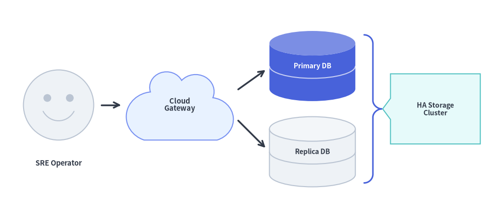
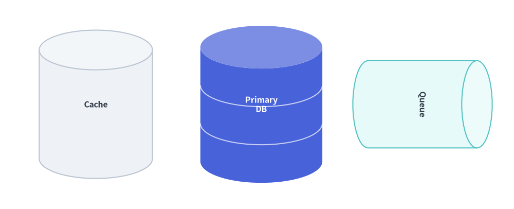
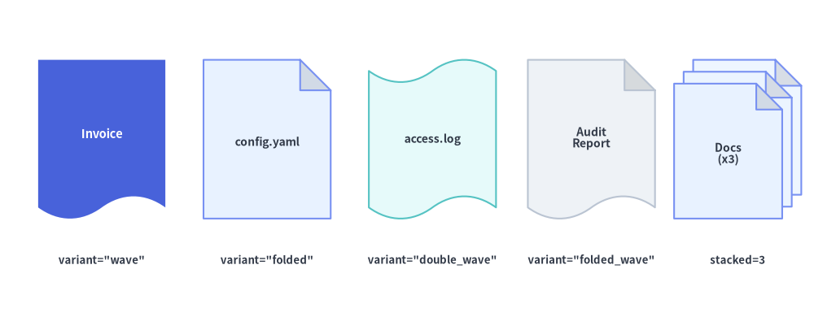
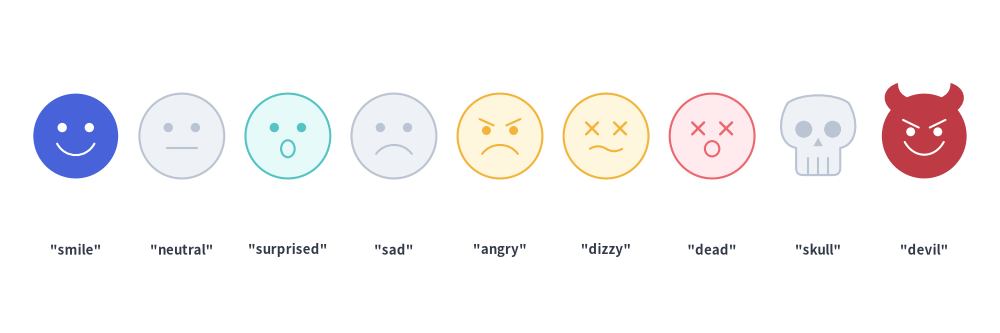
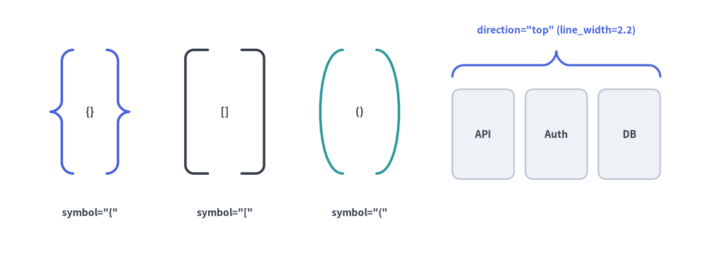

Cylinders, Cubes, Documents, Clouds & Braces
Beyond standard geometric primitives, drawlib.shapes includes seven expressive 3D, domain, and annotation shapes (cylinder, cube, document, cloud, brace, face, and bubblespeech) for technical architecture and storytelling diagrams:

Source Code
from drawlib.canvas import save, setup
from drawlib.lines import line
from drawlib.shapes import brace, bubblespeech, cloud, cube, cylinder, document, face
from drawlib.styles import Styles
from drawlib.text import text
setup(width=132, height=62)
# 1. User Actor Face
face((13, 33), radius=8.5, style=Styles.Neutral, mood="smile")
text((13, 18), "Developer", style=Styles.DarkBold.patch(text_size=10.0))
# 2. Cloud Gateway Node
cloud(
(41, 33),
width=25,
height=17,
variant="flat",
style=Styles.PrimaryNeutral,
text="Cloud\nGateway",
text_style=Styles.DarkBold.patch(text_size=10.0),
)
# 3. 3D Worker Cube & 2-Disk Database Cylinder
cube(
(73, 45),
width=22,
height=17,
depth_ratio=0.25,
style=Styles.PrimaryFlat,
text="Worker\nPod",
text_style=Styles.WhiteBold.patch(text_size=10.0),
)
cylinder(
(73, 19),
width=21,
height=17,
disks=2,
style=Styles.Neutral,
text="State DB",
text_style=Styles.DarkBold.patch(text_size=10.0),
)
# 4. Curly Brace + Stacked Audit Documents & Callout Bubble
brace(
(88.5, 32),
width=4.2,
height=40,
symbol="}",
style=Styles.PrimaryBold.patch(line_width=2.2),
)
document(
(109, 44),
width=22,
height=19,
variant="folded_wave",
stacked=3,
style=Styles.SecondaryNeutral,
text="Audit\nReports",
text_style=Styles.DarkBold.patch(text_size=10.0),
)
bubblespeech(
xy=(96, 10),
width=28,
height=15,
tail_edge="left",
tail_start_ratio=0.40,
tail_end_ratio=0.70,
tail_vertex_xy=(91, 23),
style=Styles.Neutral,
text="Auto-Archived",
text_style=Styles.DarkBold.patch(text_size=10.0),
)
line((23, 33), (27.5, 33), arrow_head="->", style=Styles.DarkBold)
line((54.5, 37), (61, 44), arrow_head="->", style=Styles.DarkBold)
line((54.5, 29), (61, 20), arrow_head="->", style=Styles.DarkBold)
line((92, 36), (97, 43), arrow_head="->", style=Styles.PrimaryBold)
save()
1. Overview of Domain Shapes
| Function | Default Anchor | Primary Role | Key Variant / Geometry Arguments |
|---|---|---|---|
cylinder |
Center (cx, cy) |
3D storage cylinders & multi-disk database stacks | disks: int = 1 |
cube |
Center (cx, cy) |
3D shaded cubes, containers, & hardware blocks | depth_ratio: float | None = None |
document |
Center (cx, cy) |
Single or stacked document/file/log cards | variant ("wave", "folded", "double_wave", "folded_wave"), stacked: int = 1, wave_ratio, fold_ratio |
face |
Center (cx, cy) |
Expressive user/actor personas & status indicators | mood ("smile", "neutral", "surprised", "sad", "angry") |
bubblespeech |
Bottom-Left (x0, y0) |
Callout speech bubbles with directional pointer tails | tail_edge ("left", "top", "right", "bottom"), tail_start_ratio, tail_end_ratio, tail_vertex_xy |
cloud |
Center (cx, cy) |
Cloud service nodes & VPC/WAN boundary enclosures | variant ("standard", "flat", "fluffy", "simple"), bump_ratio: float | None = None |
brace |
Center (cx, cy) |
Curly, square, & round grouping brackets/braces | symbol ("{", "}", "[", "]", "(", ")"), direction ("left", "right", "top", "bottom"), tip_ratio, tip_position_ratio |
2. 3D Cylinders & Database Stacks (cylinder)
For relational databases, object storage buckets, disk arrays, and message queues, cylinder renders a 3D cylindrical container with an automatically lightened elliptical top cap:
cylinder(
xy: tuple[float, float],
width: float,
height: float,
*,
style: Style,
disks: int = 1,
text: str = "",
text_style: Style | None = None,
)
Parameter Reference
| Parameter | Type | Default | Description |
|---|---|---|---|
xy |
tuple[float, float] |
Required | Center coordinate (x, y) of the outer cylinder bounding box. |
width |
float |
Required | Total horizontal width of the cylinder (> 0). |
height |
float |
Required | Total vertical height of the cylinder, including top and bottom elliptical caps (> 0). |
disks |
int |
1 |
Number of stacked storage disk tiers (>= 1). When disks >= 2, curved horizontal divider seams are drawn along the cylinder body to represent multi-platter database storage. |
style |
Style |
Required | Shape fill and border style. The top elliptical cap is automatically lightened from style.shape_fill_color. Set style.patch(angle=-90) to rotate the cylinder horizontally for FIFO message queues or pipelines. |
text / text_style |
str / Style | None |
"" / None |
Centered text label and optional typography override. |
from drawlib.canvas import save, setup
from drawlib.shapes import cylinder
from drawlib.styles import Styles
setup(width=118, height=48)
# 1. Single-tier cache cylinder
cylinder((22, 24), width=26, height=34, style=Styles.Neutral, text="Cache", text_style=Styles.DarkBold.patch(text_size=11.5))
# 2. 3-disk database stack (disks=3)
cylinder(
(60, 24),
width=28,
height=36,
disks=3,
style=Styles.PrimaryFlat,
text="Primary\nDB",
text_style=Styles.WhiteBold.patch(text_size=11.5),
)
# 3. Horizontal rotated cylinder (angle=-90 for message queue)
cylinder(
(97, 24),
width=20,
height=32,
style=Styles.SecondaryNeutral.patch(angle=-90),
text="Queue",
text_style=Styles.DarkBold.patch(text_size=11.5),
)
save()

3. 3D Cubes & Rectangular Blocks (cube)
Complementing cylinder, cube renders an oblique 3D cube or rectangular box strictly fitted within the (width, height) bounding box centered at xy:
cube(
xy: tuple[float, float],
width: float,
height: float,
*,
depth_ratio: float | None = None,
style: Style,
text: str = "",
text_style: Style | None = None,
)
Parameter Reference
| Parameter | Type | Default | Description |
|---|---|---|---|
xy |
tuple[float, float] |
Required | Center coordinate (x, y) of the outer 3D bounding box. |
width |
float |
Required | Exact outer horizontal width of the 3D box, including the right-side oblique projection (> 0). |
height |
float |
Required | Exact outer vertical height of the 3D box, including the top-face oblique projection (> 0). |
depth_ratio |
float | None |
None |
3D oblique depth fraction in (0.0, 1.0) relative to min(width, height). Defaults to 0.25 when None. Smaller values (0.15) produce a shallow 3D card; larger values (0.40) produce a deep isometric block. |
style |
Style |
Required | Fill, border (shape_line_color, shape_line_width, shape_line_style), and rotation (angle) style. |
text / text_style |
str / Style | None |
"" / None |
Label automatically centered on the front face (rather than the outer bounding box) so text never collides with the 3D seam lines. |
3-Face Automatic Shading & Stroke Mechanics
- Automatic Face Shading: From
style.shape_fill_color, Drawlib automatically computes three distinct face shades:- Front Face: Base
style.shape_fill_color. - Top Face: Lightened toward white (
+28%on standard fills,+55%on high-luminance neutral fills) to simulate overhead lighting. - Right Side Face: Darkened (
×0.82on standard fills,×0.92on neutral fills) to create natural depth shadow.
- Front Face: Base
- Unified Stroke Path: The outer perimeter and the three internal Y-seams are drawn in a single unified
PathPatch, ensuring thatDashedorDottedline styles never double-overlap on shared edges.
from drawlib.canvas import save, setup
from drawlib.shapes import cube
from drawlib.styles import Styles
from drawlib.text import text
setup(width=126, height=48)
# 1. Standard Flat Cube (depth_ratio=0.25 default)
cube((18, 27), width=23, height=23, style=Styles.PrimaryFlat, text="Pod A", text_style=Styles.WhiteBold.patch(text_size=10.5))
text((18, 9), "depth_ratio=0.25 (Flat)", style=Styles.DarkBold.patch(text_size=9.5))
# 2. Shallow 3D Block (depth_ratio=0.15)
cube((49, 27), width=23, height=23, depth_ratio=0.15, style=Styles.PrimaryNeutral, text="Shallow", text_style=Styles.DarkBold.patch(text_size=10.5))
text((49, 9), "depth_ratio=0.15", style=Styles.DarkBold.patch(text_size=9.5))
# 3. Deep 3D Cube (depth_ratio=0.40)
cube((80, 27), width=23, height=23, depth_ratio=0.40, style=Styles.SecondaryNeutral, text="Deep", text_style=Styles.DarkBold.patch(text_size=10.5))
text((80, 9), "depth_ratio=0.40", style=Styles.DarkBold.patch(text_size=9.5))
# 4. Wide Hardware Appliance Block (30x19, dashed)
cube((111, 27), width=26, height=19, depth_ratio=0.24, style=Styles.Neutral.patch(shape_line_style="dashed"), text="Appliance", text_style=Styles.DarkBold.patch(text_size=10.0))
text((111, 9), "Wide Block (Dashed)", style=Styles.DarkBold.patch(text_size=9.5))
save()

4. Documents, Files & Multi-Sheet Stacks (document)
For flowchart output steps, configuration/source files, log stream snippets, and multi-page report stacks, document provides four variant silhouettes and multi-sheet cascading (stacked >= 1):
document(
xy: tuple[float, float],
width: float,
height: float,
*,
variant: Literal[
"wave", "standard",
"folded", "page", "note",
"double_wave", "snippet",
"folded_wave", "report",
] = "wave",
stacked: int = 1,
wave_ratio: float | None = None,
fold_ratio: float | None = None,
style: Style,
text: str = "",
text_style: Style | None = None,
)
Parameter Reference
| Parameter | Type | Default | Description |
|---|---|---|---|
xy |
tuple[float, float] |
Required | Center coordinate (x, y) of the outer document bounding box (including all stacked sheets). |
width |
float |
Required | Total horizontal width of the document bounding box (> 0). |
height |
float |
Required | Total vertical height of the document bounding box (> 0). |
variant |
DocumentVariant |
"wave" |
Silhouette style of the document sheet (see Document variant Reference below). |
stacked |
int |
1 |
Number of overlapping document sheets (>= 1). When stacked > 1 (e.g. 2 or 3), sheets cascade from back-top-right to front-bottom-left inside (width, height), with background sheets automatically lightened. |
wave_ratio |
float | None |
None |
Wave peak-to-trough amplitude fraction in (0.0, 1.0) relative to sheet height. Defaults to 0.14. Effective on "wave", "double_wave", and "folded_wave". |
fold_ratio |
float | None |
None |
Top-right dog-ear corner fold size fraction in (0.0, 1.0) relative to min(sheet_w, sheet_h). Defaults to 0.24. Effective on "folded" and "folded_wave". |
style |
Style |
Required | Fill, border, and rotation (angle) style. On folded variants, the triangular corner flap is automatically darkened for 3D contrast. |
text / text_style |
str / Style | None |
"" / None |
Text label optically centered on the front-most sheet (automatically shifted away from bottom waves and top-right corner folds). |
Document variant Reference
variant |
Accepted Aliases | Top Edge | Bottom Edge | Active Ratio Args | Typical Use Cases |
|---|---|---|---|---|---|
"wave" (default) |
"standard" |
Straight | Cubic-Bézier S-wave | wave_ratio |
Classic ISO flowchart document/printout symbol, invoices, generated artifacts. |
"folded" |
"page", "note" |
Top-right dog-ear fold | Straight | fold_ratio |
Configuration files (config.yaml), source code files, Markdown/PDF pages, UML notes. |
"double_wave" |
"snippet" |
Cubic-Bézier S-wave | Cubic-Bézier S-wave | wave_ratio |
Continuous log streams (access.log), truncated text excerpts, data stream chunks. |
"folded_wave" |
"report" |
Top-right dog-ear fold | Cubic-Bézier S-wave | wave_ratio, fold_ratio |
Multi-page technical reports, specifications, and audit logs combining file and wave cues. |
from drawlib.canvas import save, setup
from drawlib.shapes import document
from drawlib.styles import Styles
from drawlib.text import text
setup(width=128, height=78)
# Row 1: The 4 Document Variants (stacked=1)
row1 = [
("wave", "Invoice", 18, Styles.PrimaryFlat, Styles.WhiteBold.patch(text_size=10.5), 'variant="wave"'),
("folded", "config.yaml", 49, Styles.PrimaryNeutral, Styles.DarkBold.patch(text_size=10.0), 'variant="folded"'),
("double_wave", "access.log", 80, Styles.SecondaryNeutral, Styles.DarkBold.patch(text_size=10.0), 'variant="double_wave"'),
("folded_wave", "Audit\nReport", 110, Styles.Neutral, Styles.DarkBold.patch(text_size=10.0), 'variant="folded_wave"'),
]
for var, lbl, cx, st, tst, cap in row1:
document((cx, 59), width=22, height=25, variant=var, style=st, text=lbl, text_style=tst)
text((cx, 42.5), cap, style=Styles.DarkBold.patch(text_size=9.5))
# Row 2: Multi-sheet stacking (stacked=3) and wave_ratio / fold_ratio customization
document((18, 22), width=23, height=25, variant="wave", stacked=3, style=Styles.PrimaryNeutral, text="Batch\n(x3)", text_style=Styles.DarkBold.patch(text_size=10.0))
text((18, 5.5), 'wave, stacked=3', style=Styles.DarkBold.patch(text_size=9.5))
document((49, 22), width=23, height=25, variant="folded", stacked=3, style=Styles.SecondaryNeutral, text="Pages\n(x3)", text_style=Styles.DarkBold.patch(text_size=10.0))
text((49, 5.5), 'folded, stacked=3', style=Styles.DarkBold.patch(text_size=9.5))
document((80, 22), width=22, height=25, variant="wave", wave_ratio=0.25, style=Styles.Neutral, text="Deep\nWave", text_style=Styles.DarkBold.patch(text_size=10.0))
text((80, 5.5), "wave_ratio=0.25", style=Styles.DarkBold.patch(text_size=9.5))
document((110, 22), width=22, height=25, variant="folded", fold_ratio=0.36, style=Styles.PrimaryNeutral, text="Large\nFold", text_style=Styles.DarkBold.patch(text_size=10.0))
text((110, 5.5), "fold_ratio=0.36", style=Styles.DarkBold.patch(text_size=9.5))
save()

5. Expressive Actor & Status Faces (face)
For user personas, customer journey maps, and system health indicators, face renders a circular face with eyes, eyebrows, and five built-in facial expressions (mood):
face(
xy: tuple[float, float],
radius: float,
*,
style: Style,
mood: Literal["smile", "neutral", "sad", "angry", "surprised"] = "smile",
text: str = "",
text_style: Style | None = None,
)
Parameter Reference & mood Variants
| Parameter | Type | Default | Description |
|---|---|---|---|
xy |
tuple[float, float] |
Required | Center coordinate (x, y) of the circular face. |
radius |
float |
Required | Outer radius of the face circle (> 0). |
mood |
FaceMood |
"smile" |
Facial expression variant (case-insensitive): • "smile": Upward cubic-Bézier smile curve.• "neutral": Straight horizontal mouth line.• "surprised": Elliptical open 'O' mouth.• "sad": Downward cubic-Bézier frown curve.• "angry": Downward frown curve plus inward-slanted eyebrows. |
style |
Style |
Required | Face fill, outline, and rotation (angle). Eyes, eyebrows, and mouth automatically use style.shape_line_color when a border is present, or high-contrast text_color/white on flat borderless styles (Styles.PrimaryFlat). |
text / text_style |
str / Style | None |
"" / None |
Optional text label and typography style. |
from drawlib.canvas import save, setup
from drawlib.shapes import face
from drawlib.styles import Styles
from drawlib.text import text
setup(width=120, height=44)
moods = [
("smile", Styles.PrimaryFlat),
("neutral", Styles.Neutral),
("surprised", Styles.SecondaryNeutral),
("sad", Styles.Neutral),
("angry", Styles.DangerNeutral),
]
for i, (mood_name, st) in enumerate(moods):
cx = 16 + i * 22
face((cx, 26), radius=9, style=st, mood=mood_name)
text((cx, 10), f'mood="{mood_name}"', style=Styles.DarkBold.patch(text_size=10.0))
save()

6. Callout Speech Bubbles (bubblespeech)
bubblespeech draws a rectangular callout box with an integrated triangular pointer tail that originates from any of the four edges ("left", "top", "right", "bottom") and points to an exact target coordinate tail_vertex_xy:
bubblespeech(
xy: tuple[float, float],
width: float,
height: float,
tail_edge: Literal["left", "top", "right", "bottom"],
tail_start_ratio: float,
tail_vertex_xy: tuple[float, float],
tail_end_ratio: float,
*,
style: Style,
text: str = "",
text_style: Style | None = None,
)
Parameter Reference
| Parameter | Type | Description |
|---|---|---|
xy |
tuple[float, float] |
Bottom-left corner (x, y) of the rectangular bubble body (always bottom-left anchored regardless of style.halign/valign). |
width / height |
float |
Width and height of the rectangular bubble body (> 0). |
tail_edge |
"left" | "top" | "right" | "bottom" |
Which edge of the bubble body the pointer tail attaches to. |
tail_start_ratio |
float |
Start attachment position along tail_edge in [0.0, 1.0] (measured from bottom-to-top for "left"/"right", or left-to-right for "top"/"bottom"). Must be < tail_end_ratio. |
tail_vertex_xy |
tuple[float, float] |
Absolute canvas coordinate (x, y) where the tip of the pointer tail points (must lie outside the bubble body). |
tail_end_ratio |
float |
End attachment position along tail_edge in [0.0, 1.0]. Must be > tail_start_ratio. |
style / text / text_style |
Style / str / Style | None |
Bubble fill/stroke style and centered annotation text. Note: bubblespeech ignores style.shape_r, style.angle, and style.halign/valign. |
from drawlib.canvas import save, setup
from drawlib.shapes import bubblespeech, circle, rectangle
from drawlib.styles import Styles
from drawlib.text import text
setup(width=124, height=54)
# Target nodes
circle((26, 12), radius=8.0, style=Styles.Neutral, text="Node A", text_style=Styles.DarkBold.patch(text_size=10.5))
rectangle((103, 21), width=26, height=16, style=Styles.Neutral, text="Service B", text_style=Styles.DarkBold.patch(text_size=10.5))
# 1. Callout with bottom tail pointing down to Node A
bubblespeech(
xy=(6, 33),
width=40,
height=15,
tail_edge="bottom",
tail_start_ratio=0.35,
tail_end_ratio=0.60,
tail_vertex_xy=(26, 25),
style=Styles.PrimaryFlat,
text="Bottom Tail Callout\n(tail_edge='bottom')",
text_style=Styles.WhiteBold.patch(text_size=10.5),
)
# Coordinate indicators for bottom-left anchor xy and tail_vertex_xy
circle((6, 33), radius=1.1, style=Styles.DangerFlat)
text((4, 29.0), "xy=(6, 33)", style=Styles.DangerBold.patch(text_size=10.0, halign="left"))
circle((26, 25), radius=1.1, style=Styles.DangerFlat)
text((28.5, 25.0), "tail_vertex_xy=(26, 25)", style=Styles.DangerBold.patch(text_size=10.0, halign="left"))
# 2. Callout with right tail pointing to Service B
bubblespeech(
xy=(65, 13),
width=16,
height=16,
tail_edge="right",
tail_start_ratio=0.30,
tail_end_ratio=0.70,
tail_vertex_xy=(88, 21),
style=Styles.SecondaryNeutral,
text="Note",
text_style=Styles.DarkBold.patch(text_size=11.0),
)
save()

7. Cloud Nodes & Boundaries (cloud)
cloud renders a smooth cubic-Bézier cloud silhouette normalized to fit its exact (width, height) bounding box centered at xy:
cloud(
xy: tuple[float, float],
width: float,
height: float,
*,
variant: Literal[
"standard",
"flat", "flat_bottom",
"fluffy", "dense",
"simple", "minimal",
] = "standard",
bump_ratio: float | None = None,
style: Style,
text: str = "",
text_style: Style | None = None,
)
Parameter Reference
| Parameter | Type | Default | Description |
|---|---|---|---|
xy |
tuple[float, float] |
Required | Center coordinate (x, y) of the cloud bounding box. |
width |
float |
Required | Exact outer horizontal width of the cloud (> 0). |
height |
float |
Required | Exact outer vertical height of the cloud (> 0). |
variant |
CloudVariant |
"standard" |
Cloud silhouette style (see Cloud variant Reference below). |
bump_ratio |
float | None |
None |
Outward lobe bulge depth ratio in (0.0, 1.0). When None, uses the optimal default for the selected variant (0.20–0.24). Lower values (0.12) create a subtle, shallow cloud; higher values (0.34) create deep, pronounced lobes. |
style |
Style |
Required | Fill, border (Dashed is ideal for VPC/subnet enclosures), and rotation (angle) style. |
text / text_style |
str / Style | None |
"" / None |
Centered text label and optional typography override. |
Cloud variant Reference
variant |
Accepted Aliases | Lobe Structure | Default bump_ratio |
Typical Use Cases |
|---|---|---|---|---|
"standard" (default) |
— | 8 asymmetric lobes around the full perimeter | 0.22 |
General-purpose "Internet", SaaS, or external network nodes. |
"flat" |
"flat_bottom" |
Flat horizontal base + 4 upper domes | 0.24 |
Standalone cloud service cards and gateway nodes with strong visual grounding for internal text/icons. |
"fluffy" |
"dense" |
12 fine lobes around the full perimeter | 0.20 |
Large VPC, WAN, or multi-node cluster boundary enclosures (especially with shape_line_style="dashed"). |
"simple" |
"minimal" |
6 wide, symmetric lobes | 0.24 |
Compact cloud badges, small icons, or thought bubbles. |
from drawlib.canvas import save, setup
from drawlib.shapes import cloud, rectangle
from drawlib.styles import Styles
from drawlib.text import text
setup(width=126, height=74)
# Row 1: The 4 Cloud Variants
variants = [
("standard", 18, Styles.PrimaryFlat, Styles.WhiteBold.patch(text_size=10.5)),
("flat", 48, Styles.PrimaryNeutral, Styles.DarkBold.patch(text_size=10.5)),
("fluffy", 78, Styles.SecondaryNeutral, Styles.DarkBold.patch(text_size=10.5)),
("simple", 108, Styles.Neutral, Styles.DarkBold.patch(text_size=10.5)),
]
for v_name, cx, st, tst in variants:
cloud((cx, 57), width=26, height=17, variant=v_name, style=st, text=v_name, text_style=tst)
text((cx, 43), f'variant="{v_name}"', style=Styles.DarkBold.patch(text_size=9.5))
# Row 2 Left: Shallow vs Deep bump_ratio
cloud((20, 22), width=26, height=17, variant="standard", bump_ratio=0.12, style=Styles.Neutral, text="Shallow", text_style=Styles.DarkBold.patch(text_size=10.0))
text((20, 7.5), "bump_ratio=0.12", style=Styles.DarkBold.patch(text_size=9.5))
cloud((52, 22), width=26, height=17, variant="standard", bump_ratio=0.35, style=Styles.PrimaryNeutral, text="Deep Lobes", text_style=Styles.DarkBold.patch(text_size=10.0))
text((52, 7.5), "bump_ratio=0.35", style=Styles.DarkBold.patch(text_size=9.5))
# Row 2 Right: Large fluffy dashed VPC enclosure containing service cards
cloud((96, 22), width=50, height=24, variant="fluffy", style=Styles.SecondaryNeutral.patch(shape_line_style="dashed"))
rectangle((86, 21), width=14, height=10, style=Styles.Neutral.patch(shape_r=1.5), text="API", text_style=Styles.DarkBold.patch(text_size=9.5))
rectangle((106, 21), width=14, height=10, style=Styles.PrimaryFlat.patch(shape_r=1.5), text="App", text_style=Styles.WhiteBold.patch(text_size=9.5))
text((96, 7.5), 'variant="fluffy" (Dashed VPC Boundary)', style=Styles.DarkBold.patch(text_size=9.5))
save()

8. Grouping Braces & Brackets (brace)
brace renders a curly ({, }), square ([, ]), or round ((, )) grouping bracket in any of four directions ("left", "right", "top", "bottom"), with stroke thickness controlled via style.line_width:
brace(
xy: tuple[float, float],
width: float,
height: float,
*,
symbol: Literal[
"{", "}", "{}", "curly",
"[", "]", "[]", "square",
"(", ")", "()", "round",
] = "{",
direction: Literal["left", "right", "top", "bottom"] | None = None,
tip_ratio: float | None = None,
tip_position_ratio: float | None = None,
style: Style,
text: str = "",
text_style: Style | None = None,
)
Parameter Reference
| Parameter | Type | Default | Description |
|---|---|---|---|
xy |
tuple[float, float] |
Required | Center coordinate (x, y) of the brace bounding box. |
width |
float |
Required | Horizontal width of the brace bounding box (> 0). For vertical braces ("left" / "right"), width is the bracket depth; for horizontal braces ("top" / "bottom"), width is the span length. |
height |
float |
Required | Vertical height of the brace bounding box (> 0). For vertical braces ("left" / "right"), height is the span length; for horizontal braces ("top" / "bottom"), height is the bracket depth. |
symbol |
BraceSymbol |
"{" |
Bracket family and default orientation (see symbol Variants below). |
direction |
BraceDirection | None |
None |
Which side of a grouped region the bracket is placed on (the direction the outer spine/tip points toward): "left", "right", "top", or "bottom" (see direction Variants below). |
tip_ratio |
float | None |
None |
Curly brace ({}) only: Fraction of the bracket depth occupied by the central outward tip in (0.0, 1.0). Defaults to 0.50. Higher values (0.70) create a sharp protruding tip; lower values (0.25) create a subtle tip. |
tip_position_ratio |
float | None |
None |
Curly brace ({}) only: Position of the central tip along the span axis in (0.0, 1.0) (measured bottom-to-top for "left"/"right", or left-to-right for "top"/"bottom"). Defaults to 0.50 (symmetric center). |
style |
Style |
Required | Stroke thickness is controlled via style.line_width (or style.shape_line_width), color via style.line_color (or style.shape_line_color), line pattern via style.line_style, and rotation via style.angle. On "square" brackets ([, ]), style.shape_r rounds the two $90^\circ$ corners. |
text / text_style |
str / Style | None |
"" / None |
Optional text label centered at xy and typography override. |
symbol & direction Variants
symbol Values |
Bracket Family | Auto direction (when direction=None) |
Supported Geometry Modifiers |
|---|---|---|---|
"{", "{}", "curly" |
Curly brace { |
"left" (tip points left, ends curl right) |
tip_ratio, tip_position_ratio |
"}" |
Curly brace } |
"right" (tip points right, ends curl left) |
tip_ratio, tip_position_ratio |
"[", "[]", "square" |
Square bracket [ |
"left" (spine on left, ends point right) |
style.patch(shape_r=...) corner rounding |
"]" |
Square bracket ] |
"right" (spine on right, ends point left) |
style.patch(shape_r=...) corner rounding |
"(", "()", "round" |
Round parenthesis ( |
"left" (arc bows left, ends point right) |
Smooth cubic-Bézier arch |
")" |
Round parenthesis ) |
"right" (arc bows right, ends point left) |
Smooth cubic-Bézier arch |
direction Value |
Orientation | Spine / Tip Points Toward | Open Ends Point Toward |
|---|---|---|---|
"left" |
Vertical (span = height) |
Left ($-X$) | Right ($+X$, wrapping items to its right) |
"right" |
Vertical (span = height) |
Right ($+X$) | Left ($-X$, wrapping items to its left) |
"top" |
Horizontal (span = width) |
Top ($+Y$) | Bottom ($-Y$, wrapping items below it) |
"bottom" |
Horizontal (span = width) |
Bottom ($-Y$) | Top ($+Y$, wrapping items above it) |
from drawlib.canvas import save, setup
from drawlib.shapes import brace, rectangle
from drawlib.styles import Styles
from drawlib.text import text
setup(width=128, height=74)
# Row 1 Left: Three Bracket Families: { } , [ ] , ( )
families = [
("{}", "{", "}", 15, Styles.PrimaryBold.patch(line_width=2.5)),
("[]", "[", "]", 38, Styles.DarkBold.patch(line_width=2.5, shape_r=1.5)),
("()", "(", ")", 61, Styles.SecondaryBold.patch(line_width=2.5)),
]
for label, sym_l, sym_r, cx, st in families:
brace((cx - 5, 57), width=4.0, height=21, symbol=sym_l, style=st)
brace((cx + 5, 57), width=4.0, height=21, symbol=sym_r, style=st)
text((cx, 57), label, style=Styles.DarkBold.patch(text_size=10.5))
text((cx, 41.5), f'symbol="{sym_l}" / "{sym_r}"', style=Styles.DarkBold.patch(text_size=9.5))
# Row 1 Right: All 4 Directions (top, bottom, left, right) around a card group
for idx, name in enumerate(("API", "App", "DB")):
rx = 88 + idx * 12
rectangle((rx, 57), width=10, height=12, style=Styles.Neutral.patch(shape_r=1.5), text=name, text_style=Styles.DarkBold.patch(text_size=9.5))
brace((100, 66.5), width=34, height=3.8, symbol="{", direction="top", style=Styles.PrimaryBold.patch(line_width=2.0))
text((100, 71.0), 'direction="top"', style=Styles.PrimaryBold.patch(text_size=9.5))
brace((100, 47.5), width=34, height=3.8, symbol="{", direction="bottom", style=Styles.SecondaryBold.patch(line_width=2.0))
text((100, 41.5), 'direction="bottom"', style=Styles.SecondaryBold.patch(text_size=9.5))
# Row 2: Curly brace tip_ratio & tip_position_ratio variations
brace((22, 23), width=30, height=6.0, symbol="{", direction="top", tip_ratio=0.25, style=Styles.DarkBold.patch(line_width=2.2))
text((22, 11), "tip_ratio=0.25 (Shallow)", style=Styles.DarkBold.patch(text_size=9.5))
brace((62, 23), width=30, height=6.0, symbol="{", direction="top", tip_ratio=0.75, style=Styles.PrimaryBold.patch(line_width=2.2))
text((62, 11), "tip_ratio=0.75 (Sharp)", style=Styles.DarkBold.patch(text_size=9.5))
brace((104, 23), width=34, height=6.0, symbol="{", direction="top", tip_position_ratio=0.25, style=Styles.AccentBold.patch(line_width=2.2))
text((104, 11), "tip_position_ratio=0.25", style=Styles.DarkBold.patch(text_size=9.5))
save()

[!TIP] For embedding syntax-highlighted source code blocks alongside callouts, see SourceCode.